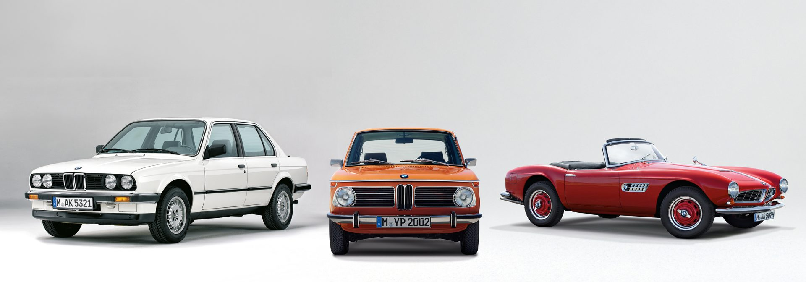
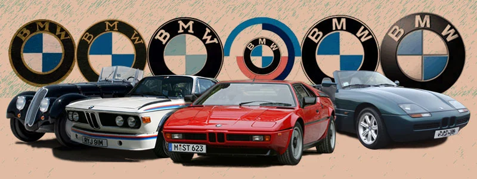
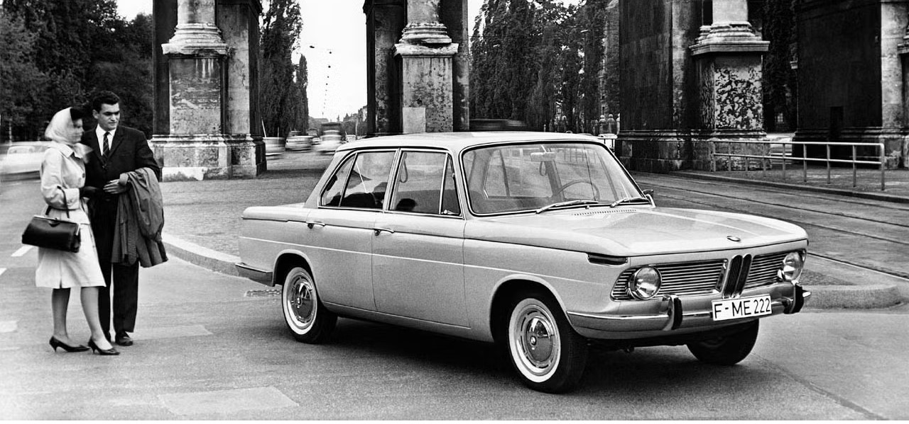

Povijest BMW-a
BMW je marka s dugom poviješću koja je tijekom desetljeća izgradila snažan identitet. Razumijevanje povijesti marke pomaže boljem razumijevanju njezinih današnjih modela i vrijednosti.

Početak marke
BMW je osnovan početkom 20. stoljeća. U svojim ranim godinama tvrtka se bavila proizvodnjom motora, a s vremenom je razvila i vlastitu automobilsku proizvodnju.
Razvoj kroz vrijeme
Tijekom razvoja BMW je postao poznat po tome što svoje automobile nije gradio samo kao prijevozna sredstva, nego i kao proizvode koji nude više preciznosti, kvalitete i vozačkog dojma.
Prepoznatljiv smjer
Marka je s vremenom razvila prepoznatljiv pristup: tehnička preciznost, naglasak na vozaču i vozila koja nude određenu razinu sportskog karaktera.
Širenje ponude
BMW danas proizvodi male automobile, limuzine, karavane, SUV modele i sportske izvedbe, čime se obraća različitim skupinama korisnika i tržištima.
Zašto je povijest marke važna?
Bolje razumijevanje marke
Kada se poznaje razvoj marke, lakše je razumjeti zašto BMW i danas naglašava kvalitetu vožnje, tehnologiju, sigurnost i određeni standard izrade.
Utjecaj na današnje modele
Mnogi elementi po kojima je BMW danas poznat rezultat su dugog razvoja i iskustva. To se vidi u dizajnu, konstrukciji vozila i ukupnom pristupu proizvodnji.

Kako je BMW izgradio svoj ugled?
Kombinacija tehnologije i kvalitete
Jedan od razloga uspjeha marke jest kombinacija tehničkog razvoja i pažnje prema završnoj obradi vozila. Na taj način BMW je stekao reputaciju proizvođača ozbiljnih i kvalitetnih automobila.
Prepoznatljiv identitet
Tijekom vremena BMW je razvio prepoznatljiv identitet koji povezuje izgled, vozne osobine i status marke. Zbog toga se BMW ne promatra samo kao proizvođač automobila, nego i kao marka s jasnom filozofijom.
